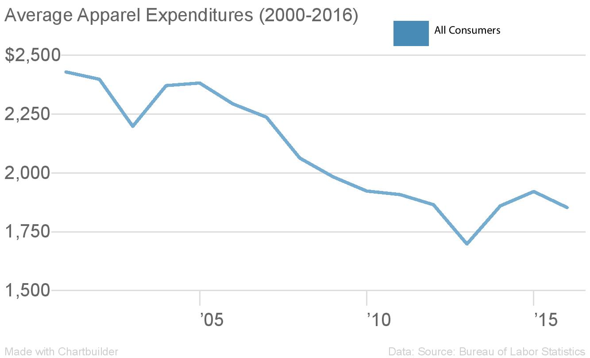

Fashion Forward: A Closer Look Into How Americans Have Been Spending on Apparel In The Last Sixteen Years
Note: The dollar amounts referred to in this article have been adjusted for inflation, according to 2017 prices.
The apparel industry is a fickle one – fashion fads are evolving by the day, brands are quickly going mobile and retailers face pressure to keep up with the market demand. It’s no surprise that consumer expenditures towards apparel are subject to fluctuate as well. What an individual chooses to wear is one of the most candid and uniquely personal forms of self-expression. Often, style can be an indicator of personality, goals and even socioeconomic status, as well as reflections of a socially-conscious and adaptive society. In the last sixteen years, America has faced three polarizing presidents, a rise of a new feminist movement, a global recession and a burst of social media networks and technological innovations that collectively manifest in consumers’ choices and attitudes. Consumers are redefining what fashion means to them, one item of clothing at a time, communicating to the world they are impacted by and adjusting to political, economic and social inequalities and progresses of the age.
The American apparel market was valued at $218.4 billion USD in 2016, which grew 3% from the previous year. However, in 2016, the percentage of all consumer expenditures that went towards apparel was 3.1%, compared to 3.9% ten years prior. Business may be booming, but consumer expenditures in apparel have overall declined. The average amount consumers spent on apparel dropped 19% between 2006-2016. While apparel is clearly a necessity, the role it plays in society has shifted in recent years. It’s not that consumers do not prioritize shopping for clothes – it’s that the way they shop for them has changed.

Economically, spending on apparel has naturally plummeted since the 2008 recession, hitting an all-time low in 2013. However, the average yearly income for the average American has been steadily increasing since 2012, reaching $44,460 per year in 2016. In 2016, Americans have grown wealthier, the economy has improved (America’s GDP has been steadily increasing since 2009, reaching $18.57 trillion USD in 2016), inflation rates have reached its lowest at 1.6%, and unemployment rates have dropped down to roughly 4.9%. An affluent economy however does not equate increased expenditures. The amount that consumers spend on apparel is relatively low, as average apparel expenditures continue to decrease over time (despite a spike in growth in 2015).
Culturally, versatility in fashion is one of the dynamic forces that has affected consumers since the millennium. More specifically, people are buying more versatile clothing that can be worn at any time, so it can cross over into a variety of weather conditions and occasions. The strict rules that once guided appropriate clothing types have loosened over time. For example, it’s become more socially acceptable to wear more relaxed, comfortable clothing for work. With the rise of the athleisure movement in the early 2010s, in which athletic clothing was popularized for everyday wear, the gaps between professional and leisure wears were starting to close. What people wear during the work week can also be worn casually for weekends or nights out as well.
The apparel industry may be mostly targeted towards female consumers, but that does not mean that male consumers are unaffected. Rather, they simply spend their incomes on apparel differently. Income is a huge factor that influences spending, and disparities between income by gender is not to be ignored. As of 2016, the average woman makes 79 cents to the average man’s dollar. The gender pay gap is further reflected in the median weekly earnings by gender chart, where in 2016, the average man earned $940 per week ($48,880 per year) whereas the average woman earned $770 per week ($40,040 per year). Women may have less purchasing power than men do, due to income differences, but at the same time, expenditures for women’s clothing is significantly higher than those for men’s clothing.

The apparel industry may be mostly targeted towards female consumers, but that does not mean that male consumers are unaffected. Rather, men and women simply spend their incomes on apparel differently. Income is one factor that influences spending, and the disparities between income by gender is not to be ignored. As of 2016, the average woman earns roughly around 79 cents to the average man’s dollar. The gender pay gap is further reflected in the median weekly earnings by gender chart, where in 2016, the average man earned $940 per week ($48,880 per year) whereas the average woman earned $770 per week ($40,040 per year). Women may have less purchasing power than men do (due to income differences) but at the same time, expenditures for women’s clothing is significantly higher than those for men’s clothing despite steadily decreasing. Women have also spent more of their income on apparel than men up until 2005, but afterward, the percentage of income spent on apparel for men is higher than that of women. This is not to say that men are buying more apparel than women are, but rather that men continue to earn more than women do and the gender pay gap is nowhere close to closing.


The percentage of income that men spend on apparel fluctuates very little in comparison to the rapidly decreasing percentage of income that women spend on apparel. This may be a reflection of how men’s fashion trends are relatively consistent; men’s apparel tends to be simpler and with less variety, such as two-piece suits, t-shirts or polos, shorts and pants that also overlap into different work or leisure occasions. On the other hand, there is more diversity in women’s fashion; from rompers to dresses and skirts to bras, there is no shortage of different types of women’s apparel. Women’s fashion has also always been considerably more divisive – as previously mentioned, apparel for work and leisure was always very separated. Today, flowy wide-leg culottes have replaced the more traditional straight-leg chinos, leggings can be worn as pants, pajamas have been rebranded as “coordinate sets,” and bras, or rather — the decision to wear them – have become more of a personal choice rather than a socialized necessity. Therefore, it is more likely that women are spending their income on pieces than can overlap similar to the way men’s fashion trends operates.
In terms of age groups, there are also different factors that influence generational spending habits on apparel, such as income. In recent years, Millennials belong to the age group 25-34, Generation X’ers belong to the age group 35-44, and Baby Boomers belong to the age group 55-64. It should be noted that certain people have entered different generations over time – for example, the people who were between the ages of 25-34 in 2000 are clearly not the same people who are 25-34 in 2016.
Since the global recession in 2008, competition for jobs is challenging and the job market is still recovering. The younger generations have been hit the worst, since they are currently entering the workforce. They are the age group that is most likely to live with their parents, rent instead of buy homes, least likely to own a car, and often hold multiple jobs. The 25-34 age group earns the least amount of income compared to the 35-44 and 55-64 age groups in the past sixteen years. In fact, today’s Millennials earn 20% less income than Baby Boomers did when they were in the same age, so they are the poorest generation out of the age groups. As illustrated in the chart below, there is a wide gap between the 25-34 age group’s earnings and that of 35-44 and 55-64 age group. The economic outlook for the 25-34 age group is also bleaker, which may influence the ways in which they spend money on apparel. For example, income for the 35-44 age group and 55-64 age group is slowly increasing, while income for the 25-34 age group is slowly decreasing over time. Many people in the 55-64 age group are on the way to retirement, which may be why their earnings are so high. Whereas the 35-44 age group are currently mid-career in the workforce, which may account for why their earnings are catching up to that of the 55-64 age group.

However, the 25-34 age group also spends more of their income on apparel than the other two age groups do. In 2015, the 25-34 age group spent 4.7% of their income on apparel, while the 35-44 age group spent 5.3% and the 55-64 age group spent 3.2%. In comparison to a two years ago, the 25-34 age group had dropped down 0.5%. Since the 25-34 age group earns less money, they may be more likely to prioritize distributing their income more frugally on other necessities, such as food and housing. However, they are still leading above the 35-44 age group when it comes to spending money on apparel, although they contributed less towards overall expenditures. The 35-44 age group are not as wealthy as the 55-64 age group, but they spend more of their income on apparel than the 55-64 age group. The 35-44 age group accounted for the most amount of apparel expenditures, but their income is much higher than that of the 25-34 age group and aligns closely with the wealthiest generation, the 55-64 age group.
The 55-64 age group also accounted for the least amount of expenditures on apparel. This could potentially be due to the rise of e-commerce and mobile shopping – Amazon, for example, accounted for 43% of e-commerce retail sales in 2016. Online shopping has become a mecca for retail, where purchasing a new coat could be done with a swift click of a button, as opposed to waiting in lines or physically traveling to a brick-and-mortar store. In 2016, 67% of today’s Millennials prefer to make an online purchase, whereas for today’s Generation X and Baby Boomers, the percentages are 56% and 41%, respectively. It can be inferred that the reason why apparel expenditures are so low for Baby Boomers may be because they are less likely to buy online.
Economically, the income disparities amongst the three age groups play a signficiant role in how they choose to spend their money on apparel. Those who earn the highest amount of income are not necessarily the same people who are spending a substantial amount of their income on apparel. Younger generations may spend more of their income on retail, but it is the older generations that are carrying the apparel expenditures to higher levels. It demonstrates which type of consumer values apparel more so than the other types, and income is a major influence over that.


Apparel expenditures have been fluctuating for different demographics over the last sixteen years, depending on the nature of circumstances affecting each group. Earning less income is an influential factor for women and those who belong in the 25-34 age group, while men and those in the 55-64 age group choose to spend less on apparel. Apparel expenditures may be declining, but the different demographics of people who are buying apparel have different approaches to how they choose to spend their income on it. This tells a story of how a recovering economy and its income disparities, as well as signs of changing times, all challenge the ways in which different individuals change their retail preferences, habits, priorities, and ultimately, forms of how they express themsleves.